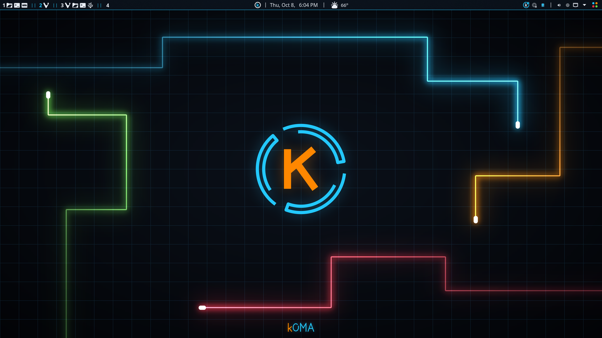
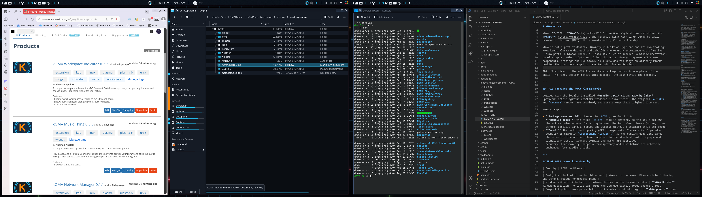

Pop out to float
Pop any window out of the tiling into a floating window, and back again.

KDE Plasma 6 · Free & open source
Omarchy’s feel, still all Plasma. A dark, sharp, keyboard-driven desktop with tiling, built entirely from native KDE Plasma parts.
kOMA (KDE + Omarchy) is inspired by Omarchy. I wanted its look, its keyboard-driven workflow, and its tiling, but I wanted KDE Plasma’s goodness too: its widgets, its settings, and all the customization. kOMA gets Plasma as close to the Omarchy experience as it can while still being Plasma, so you can keep tweaking it like any other Plasma desktop.


Krohnkite, a KWin script, tiles your windows like a tiling window manager, but it runs on top of Plasma, so you keep the best of both.
Pop any window out of the tiling into a floating window, and back again.
Tiled windows stay resizable: drag a border to change their widths.
Each workspace spans your whole screen set, so a single workspace covers both screens on a two-monitor setup.
Optional Omarchy-style shortcuts for launching, moving, and switching, alongside the kOMA Launcher on Super+Space.
A dark look in four color schemes: Tron Aqua, McLaren, Ferrari, and Lambo. Switch between them from the panel.
Windows without title bars, with a colored outline on the focused window.
One panel per screen: workspaces, the launcher, the clock, network, audio, and power controls, built from the kOMA widgets below.
The kOMA Lightcycles wallpaper, plus Powder and River, with matching lock and login screens, Plasma Monochrome icons, and an animated kOMA splash.
In a KDE Plasma 6 session, open a terminal and run:
This downloads the kOMA installer, checks it against the release checksums, and opens it. The installer shows every change and asks before applying anything. Your current settings are backed up first, and Restore puts your original desktop back, panels included.
Latest release → Source & support →Requires KDE Plasma 6, Python 3, and curl. On Arch-based systems the installer can install the remaining packages it needs, asking for your password. Tested on EndeavourOS.
Inspired by Omarchy by David Heinemeier Hansson / Basecamp. kOMA is maintained by Columbia Foundry and is not an official Omarchy release. Components keep their own licenses; see LICENSES.md.
The kOMA installer sets these widgets up for you; some are optional and it asks first. Each one is also available on its own for any KDE Plasma 6 desktop.